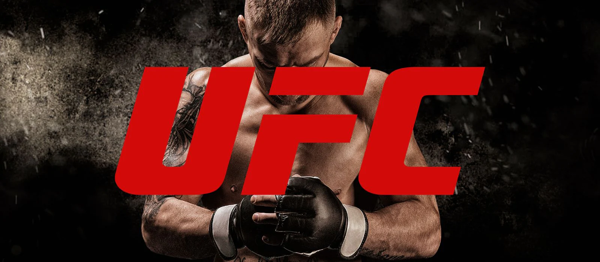

Sobre o UFC
UFC (Ultimate Fighting Championship)

Se você está procurando entender o que torna o UFC o gigante que é hoje, o segredo está na mistura perfeita de entretenimento de alto nível e mérito esportivo.
Aqui está um resumo do que define a organização:
O Palco: As lutas acontecem em uma gaiola de oito lados conhecida como Octógono, projetada para segurança e para evitar que qualquer estilo de luta (como o boxe) tenha vantagem sobre outros (como o grappling).
A Evolução: O que começou como um "quem venceria entre um carateca e um lutador de sumô?" transformou-se em um esporte de atletas híbridos. Hoje, ninguém sobrevive no UFC sendo especialista em apenas uma coisa; é preciso dominar a trocação e o chão.
As Divisões: Atualmente, a organização conta com 12 categorias de peso (8 masculinas e 4 femininas), garantindo que os confrontos sejam justos e técnicos.
O Espetáculo: Sob o comando de Dana White, o UFC adotou um modelo de produção similar ao de Las Vegas, com luzes, trilhas sonoras marcantes e os famosos Pay-Per-Views, transformando lutadores em estrelas globais como Conor McGregor, Anderson Silva, Amanda Nunes e Jon Jones.
O UFC não é apenas uma liga de lutas; é onde a teoria das artes marciais é testada na prática, decidindo, round a round, quem é o lutador mais completo do planeta.
.jpeg)